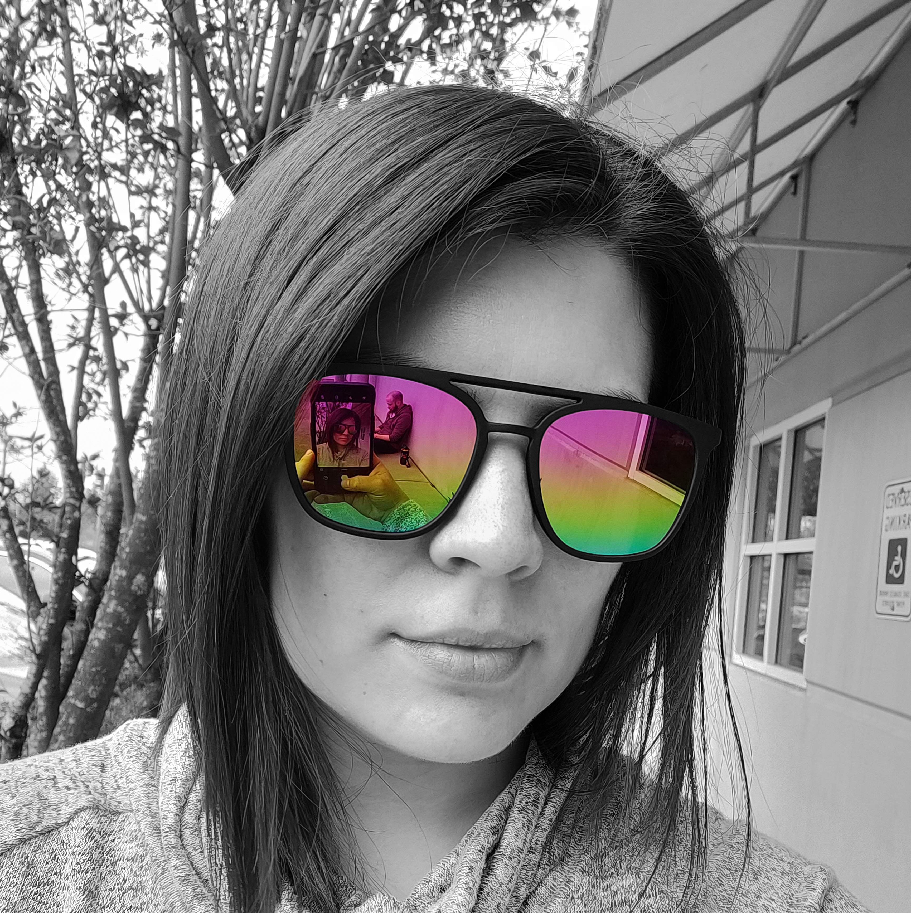

About
As an accomplished designer and aspiring programmer, I have a proven track record of managing and executing creative projects. Balancing the demands of being a mom of two amazing humans and one furry beast I excel in preparation and adaptability. I am committed to continuously expanding my knowledge base, fostering collaboration, and driving collective success within any team I join.
Experience
-
Fiscal Specialist 1 - University of Washington
Sept 2023 - Present
-
Ecommerce Web Designer & Consultant - Blue Bunny Hollow
Apr 2018 - Present
-
Technical Implementation Specialist - M2 Information Systems
Jun 2009 - Apr 2016
-
Web Director (Board of Directors) - Edmonds Arts Festival
Jun 2009 - Dec 2010
-
Database Marketing Coordinator - SPIE
Dec 2006 - Mar 2009